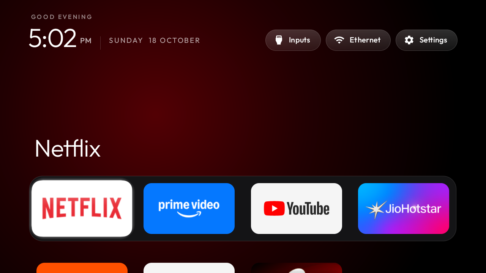
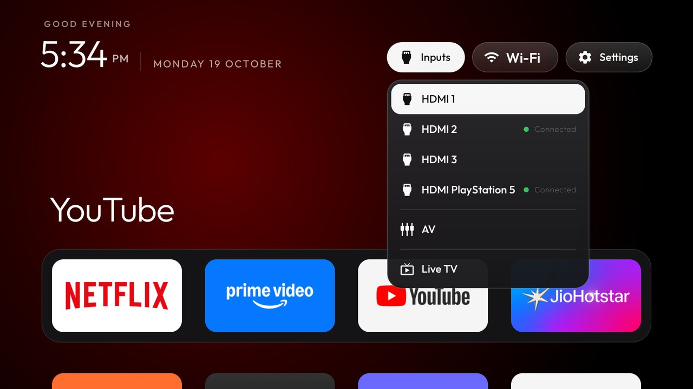
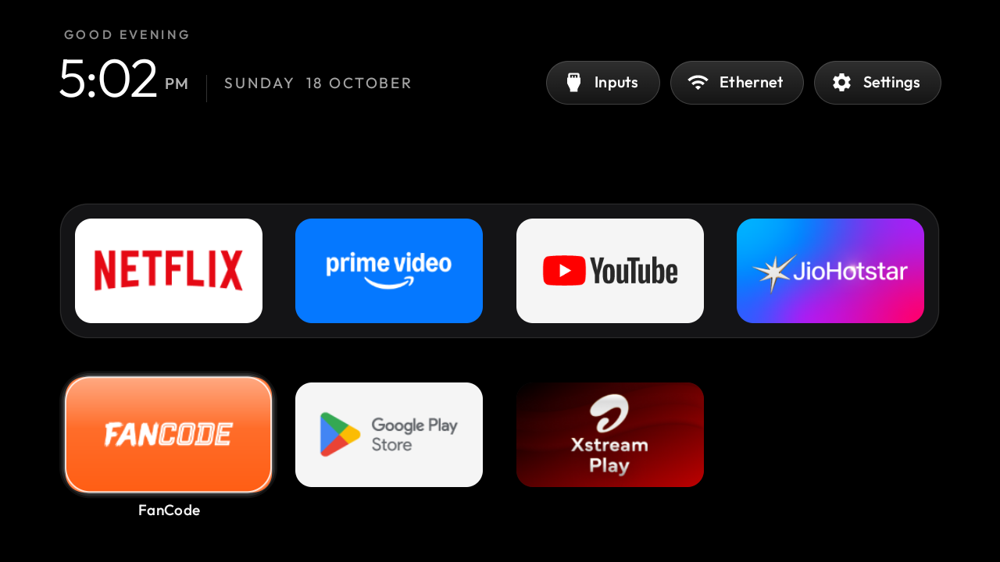
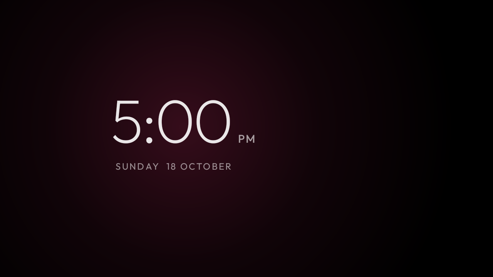
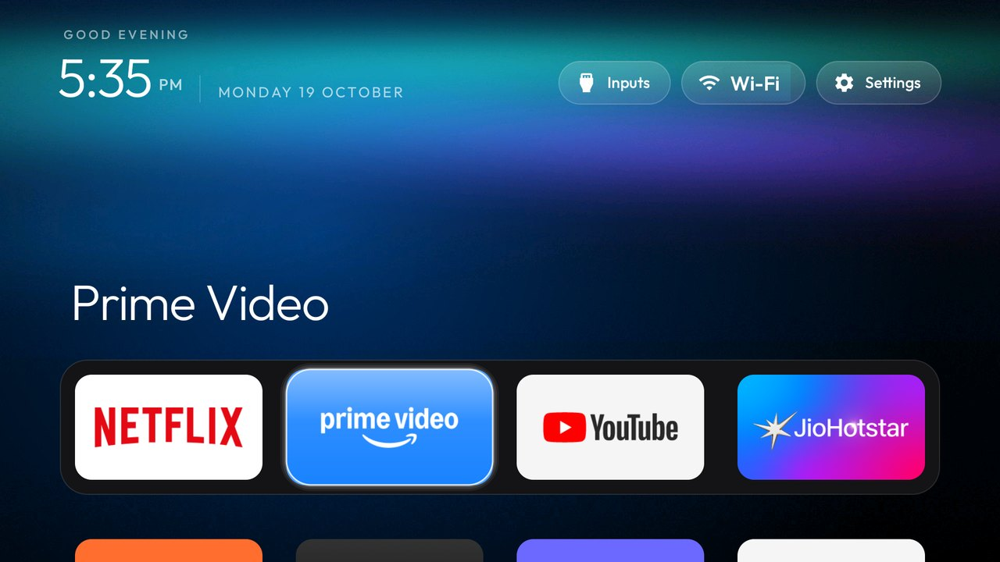
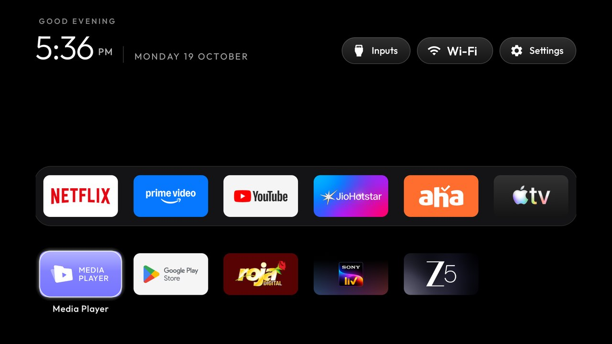
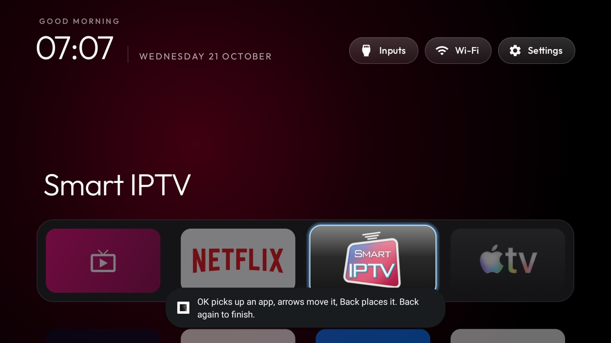
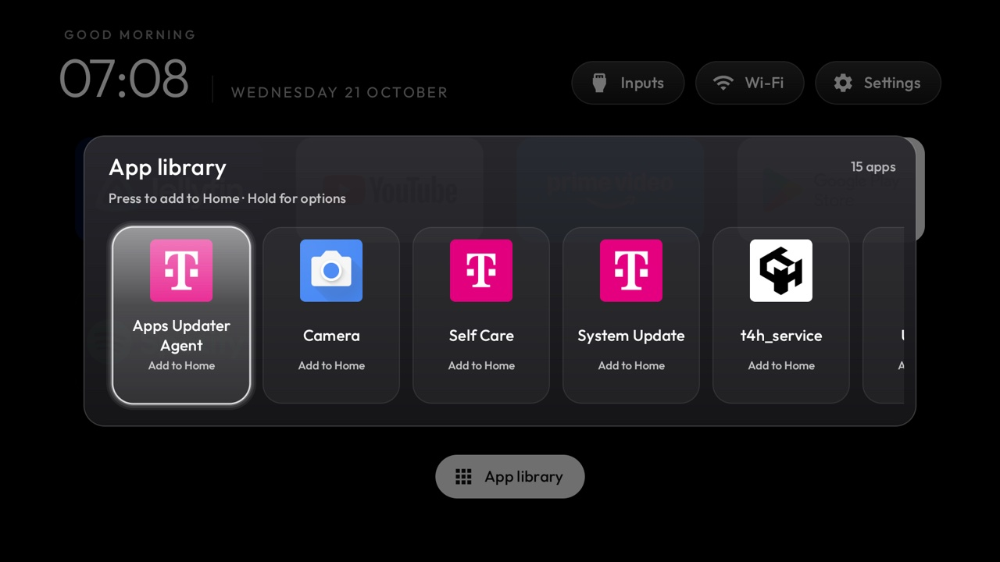

🌐 官方在线文档与静态镜像中心 (GitHub Pages)：https://shijiuwei.github.io/cleanyourtv-mirror-585/
📚 技术规约与文档归档菜单 (Docs Catalog)：https://shijiuwei.github.io/cleanyourtv-mirror-585/docs/


Samsung, LG, Roku or another non-Android TV? CleanYourTV can't run there, but you can still turn off the tracking, step by step with your remote: cleanyour.tv/not-android
The viral tweet: x.com/gathint/status/2111379569030939102
On 17 October 2026 I posted a before and after of my parents' TV, cleaned up by Claude Code over Wi-Fi. It reached 7.4M views, people started doing the same to their own TVs, and their replies turned into the lists here: 170+ TV models from 200+ contributors in four days. The repo was called tv-vibehack until the 19th; old links work.
Themes, switches and add-ons: cleanyour.tv/addons
Official links: the website is cleanyour.tv and the code, launcher and tools live only in this repo. Other domains using the name, such as cleanyourtv.com, are not run by this project (#1004).
How it works
Android TVs have the same debug bridge as Android phones. Switch on USB debugging in the TV's developer options, allow your computer once, and the rest is standard Android tooling:
| Step | What happens |
|---|---|
| Back up | The list of installed packages and settings. |
| Disable | The manufacturer's telemetry, ad services, content rows and preloaded junk, with pm disable-user. Nothing is uninstalled, so a restore script can undo every step. |
| Install | A small native launcher, made the default home screen. |
No root, no cable, nothing uninstalled, and a one-line restore if you change your mind.
The bloat differs by brand, so the prompt has your coding assistant discover it on your TV and ask before touching anything you might use.
Quick start
| You have | Do this |
|---|---|
| A computer | Use the prompt with a coding assistant: the three steps below. |
| A computer, no coding assistant | Run the three steps yourself: the commands are in Doing it by hand. |
| Only an Android phone | Use the community-built Clean Your TV app by @udhaykumarbala: connect, analyse, clean, in about five minutes. No laptop, no coding agent. |
The three steps below are written for a coding assistant: the computer needs to be on the same Wi-Fi as the TV, with a shell on it. Without an assistant, Doing it by hand is the same job, run by you.
Any of these work: Claude Code (on 0G Private Computer or an Anthropic plan), Codex, Gemini CLI or Antigravity CLI.
| Where | What to do |
|---|---|
| 1. On the TV | Settings → Device Preferences → About → press OK on Build seven times → back → Developer options → USB debugging on. If you see a Network or ADB debugging toggle, turn that on too. Keep the TV on. |
| 2. On your computer | Clone the repo and open that folder in your assistant (git clone https://github.com/Gathin23/cleanyourtv), then paste PROMPT.md and fill in your TV model. |
| 3. Follow along | Accept "Allow USB debugging?" on the TV, then answer the checklist: which apps you use, the dock size and app order, whether to keep the voice assistant, Chromecast and updates. |
Cloning matters: the assistant reuses this repo's tools/disable.sh and launcher/build-and-install.sh
instead of writing its own, and that is where the backup, the Home guard and the restore record live.
The assistant backs up, debloats, builds and installs the launcher, and checks each step with screenshots pulled from the TV. With this repo as context it takes about fifteen minutes.
What you get
A home screen that looks like an Apple TV and gets out of the way:
| Part | What it looks like |
|---|---|
| A pitch-black home | A dock of your four favourite apps in a rounded band, where Apple TV puts it. |
| A top shelf | Names the focused app in large type, with an ambient glow in a colour taken from its artwork. |
| The rest of your apps in a grid | Slides up when you press Down. |
| One floating glass highlight | Springs from tile to tile. The focused tile lifts and shows its name. |
| Three frosted buttons | Inputs (HDMI ports under the names you gave them in the TV's settings, AV, Live TV), Wi-Fi or Ethernet with the network name, Settings. |
| A greeting, a thin clock and the date | In Outfit, and a matching Clock screensaver. Set show_stats in config or a theme for one line under the clock: CPU, free memory and free storage. It stays off unless you turn it on, and it refreshes only while Home is on screen. |
| Themes and module cards | Themes change colours, wallpaper, dock and columns without a rebuild, and module cards let other apps plug a tile in, only with your say-so. |
And a TV that stops working against you: no sponsored rows, no "Discover" nags, no analytics phoning home, no apps you never asked for.
 |  |
| Top shelf and ambient glow | Inputs: HDMI with connection state, AV, Live TV |
 |  |
| The grid, one glass highlight, the tile's name | Clock screensaver, drifts so nothing burns in |
 |  |
Aurora theme, pushed with tools/theme.sh | Six columns and a six-app dock, same launcher |
 |  |
With tile_menu, hold OK on a tile, Move: arrows carry it, Back puts it down | App library: one press puts a removed app back on Home |
Supported TVs
Anything running Android TV or Google TV.
| Platform | What works |
|---|---|
| Android TV, Google TV | The debloat and the launcher. |
| Fire TV | The debloat half only, since Fire OS will not hand Home to a third-party launcher. And on the 2015 Fire TV Box (Fire OS 5) even that half fails: every pm route is refused. |
| A few China-market TCL sets | They refuse to install any launcher at all; their lists say so in the header. |
| Samsung (Tizen), LG (webOS), Roku, Vizio, Hisense VIDAA | Not supported (no ADB). Turn off the tracking instead: cleanyour.tv/not-android. See SHOWCASE.md for four webOS ports, and docs/devices/samsung-tizen.md for what a 2021 Samsung set answers over Wi-Fi (no ADB, so no pm disable-user) if you are weighing a Tizen port. |
Tested lists from contributors, one folder per model in examples/:
TCL 74 · Sony 40 · Xiaomi 32 · Philips 17 · Skyworth 13 · Hisense 11 · Amazon Fire TV 7 · Panasonic 6 · BenQ 4 · JVC 4 · OnePlus 4 · Thomson 4 · Google 3 · Grundig 3 · Haier 3 · Motorola 3 · NVIDIA Shield 3 · RCA 3 · SHARP 3 · Vu 3 · CHiQ 2 · EKO 2 · FFalcon 2 · Hitachi 2 · Insignia Fire TV 2 · Kalley 2 · Kogan 2 · Nokia 2 · onn 2 · Redmi 2 · RockTek 2 · Sankey 2 · Sber 2 · Toshiba 2 · Vidda 2 · Acer · AiPro2K · AIWA · AQUA · Artel · ASUS · Beko · BGH · Caxium · Cecotec · Challenger · Compac · Dcolor · Dialog · DYON · Freebox · INCLO · Karbonn · KTC · Liberton · Lumio · Master-G · MTC · Next · Noblex · OK. · OPPO · Panavox · PEAQ · Polytron · PPTV · PRISM+ · SANYO · Seleco · Super General · Síragon · Tele System · TiVo · Tornado · Turkcell · Tuvio · Verizon · Vision · Alwtniet, Anker Nebula, BYINTEK, Epson, Formovie, Gadnic, HOTACK, HY320, JMGO, Magcubic, Portronics, Stellamore, Wanbo and XGIMI projectors
The full list
| TV | OS |
|---|---|
| Acer AR55AR2851UDPRO 55" (SCBC R4, Realtek rtd2851m), India | Android TV 14 |
| AiPro2K (Expressluck, dongnae; Changhong AI PONT family) | Android TV 14 |
| AIWA AI PONT SA (Changhong, osaka, ISDB86AW) | Google TV 14 |
| Alwtniet HY320 Mini projector (device adt3, Askey; Allwinner/HTC firmware), 1 GB, 720p | Android 11 |
| Amazon Fire TV 4K smart TV, 50" and 75" Omni Series (AFTTIFF43, brandenburg) | Fire OS 7.7.1.4 / 7.7.1.7, Android 9 |
| Amazon Fire TV smart TV (AFTEU014, greta, MediaTek m7322), Germany | Fire OS 7.6.8.5 / Android 9 |
| Amazon Fire TV Stick 4K Max, 1st gen 2021 (AFTKA, kara), Colombia | Fire OS 7.7.1.3 / Android 9 |
| Amazon Fire TV Stick 4K, 1st gen 2018 (AFTMM, mantis) | Fire OS 6.7.1.1 / Android 7.1 |
| Amazon Fire TV Stick 4K, 2nd gen 2023 (AFTKM, karat), Brazil | Fire OS 8.1.8.5 / Android 11 |
| Amazon Fire TV Stick Lite, 1st gen 2020 (AFTSS, sheldon) | Fire OS 7.7.1.7 / Android 9 |
| Amazon Fire TV, AFTDEC012E (ginza), Android 11 | Fire OS / Android 11 |
| Anker Nebula Cosmos projector D2140 (D2140-Cosmos, SDMC/Amlogic, 2 GB), Vietnam | Android TV 9 |
| Anker Nebula Mars 3 Air projector D2325 (Nebula_Mars_2_V2, taihang, MediaTek m7332), Portugal | Google TV 14 |
| Anker Nebula projector D2426 (D2426_CapsuleIIIPro, baekdu, SDMC/MediaTek m7632, 1.7 GB), Brazil | Android TV 14 |
| AQUA MatrixTV EE 50" 4K (Haier, AQ9676EU, omonia, MediaTek), Indonesia | Google TV 14 |
| Artel smart TV (CVTE TP.MT5510S.PB782, cvt_mt5863_eu, SMART_TV), Uzbekistan | Android 7.0 |
| ASUS M1G Google TV (MOKA, dahu, Realtek RTD2851F), US | Android TV 11 |
| Beko B43B880B (Arçelik, sinchon, MediaTek), Turkey | Android TV 11 |
| BenQ E55-735 (Changhong AI PONT, DVB96BQ) | Google TV 14 |
| BenQ E55-750 (Changhong AI PONT, DVB96BQ) | Google TV (Android 11) |
| BenQ GV32 portable projector (SDMC, BenQ_GV01, himalaya, MediaTek m7332) | Google TV 14 |
| BenQ QS01 Android TV dongle for BenQ projectors (Inspur, Amlogic S905Y2, 2 GB) | Android TV 12 |
| BGH Smart TV (reported model; UKNV.260821.001) | Android TV 14 |
| BYINTEK Love U4 projector, 1080P (Skyworth RG_HS352, HiSilicon Hi3751V350, 1 GB), Brazil | Android 9 |
| BYINTEK T5 Max projector (built-in Google TV stick: SkyworthDigital YYT, Amlogic), Brazil | Google TV 14 |
| Caxium 58" 147 cm UHD Smart TV (Realtek RTD285O, RTK2851P, TopTech + Zeasn), Colombia | Android TV 9 |
| Cecotec VQU10065S 65" QLED (Vestel-built, shandao, MediaTek), Spain | Android TV 14 |
| Challenger 32T22 BT (cvt_mt5863_col, board TP.MT5510.PB781, MediaTek MT5659, 1 GB RAM), Colombia | Android 7.0 |
| CHiQ AI PONT (Changhong GTVU65, dangni, MediaTek mt5867) | Google TV 14 |
| CHiQ AI PONT (DVB93CQ) | Android TV 11 |
| Compac ATV R2 (SCBC R2, Realtek RTD285O) | Android TV 9 |
| Dcolor GD2 (YHT) | Google TV 14 (SDK 34) |
| Dialog ViU (SEI Robotics SEI103DL, Amlogic, NES middleware), Sri Lanka | Android TV 9 |
| DYON 2K Android TV (MTC, komagome, MediaTek m5621), Germany | Android TV 11 |
| EKO 2K Google TV (MTC-built, tennoji, MediaTek mt5867 / T56) | Google TV 14 |
| EKO 4K Android TV (bangbae, MTC, MediaTek) | Android TV 11 |
| Epson LS800 laser projector (Askey HA90 module, sti6202d101, Amlogic) | Android TV 14 |
| FFalcon (雷鸟) r34a0, China (V8-A920T01-LF1V147, Amlogic T920), 1 GB | Android 5.1.1 |
| FFalcon (雷鸟) 鹤6 PRO 65S585C Pro (China, tcl_mt5879_cn, MediaTek MT9653) | Android TV 11 |
| Formovie / Fengmi projector MiProjM05 (eva, Amlogic) | Android TV 9 |
| Formovie Laser 4K projector / Formovie Theater (hanlla, MediaTek T31 / m7632, 1.8 GB) | Android TV 14 |
| Freebox Player POP (Free, fbx8am, Amlogic), IPTV/DVB-T box | Android TV 10 |
| Gadnic PROJ100W projector (built-in Google TV stick: SkyworthDigital YYT, Amlogic HP46B), Argentina | Google TV 14 |
| Google Chromecast with Google TV 4K (sabrina) | Google TV 14 |
| Google Chromecast with Google TV HD (boreal) | Google TV 14 |
| Google TV Streamer 4K (kirkwood, GZRNL) | Google TV 14 |
| Grundig 50 GFU 7850 B 50" (Arçelik, CO3Plus, sinchon, MediaTek), Turkey | Android TV 11 |
| Grundig 50VLX22LDLBV (Arçelik, CO3Plus, sinchon, MediaTek), Netherlands | Android TV 11 |
| Grundig Android UHD TV (Arçelik, GxGrNM, kunyang, MediaTek), Turkey | Android TV 14 |
| Haier Android TV DVB2K (broadway, HaierATVT56DVB) | Android TV 11 |
| Haier H32S80EFX (MatrixTV CE, HRT56EU, deto, MediaTek), Thailand | Google TV 14 |
| Haier MatrixTV GE (HR9216EU, haeundae, MediaTek), EU | Google TV 14 |
| Hisense 55QD6QF Fire TV (AFTOLCBC82, ginza), Canada | Fire OS 8.1.8.0 / Android 11 |
| Hisense 65D62QH (VIDAA_TV, MediaTek MT9653), China | Android TV 11 |
| Hisense E5Q Pro (VIDAA_TV, MediaTek MT9653), China | Android TV 11 |
| Hisense Fire TV (AFTCIBFBD1, coyote, MediaTek), US | Fire OS 8.0 / Android 11 |
| Hisense HG9 (HiSmart 4K A4FFM) | Android TV 9 |
| Hisense HiSmartTV A4 (xiaoyushan, MStar m7322), Android 11 firmware RTT2.221108.001 | Android TV 11 |
| Hisense HiSmartTV A4 (xiaoyushan, MStar m7322), India | Android TV 9 |
| Hisense SmartTV 4K FFM (huangshan, MediaTek), Latin America; also the US Hisense U9DG | Android TV 10 |
| Hisense SmartTV 4K FFM (lushan, MediaTek MT9676), Mongolia | Google TV 12 |
| Hisense SmartTV 4K FFM (songshan, MediaTek m7632); also the US Hisense 50A6H4 | Android 11 (SDK 30) |
| Hisense U75 / 75U75N / 65U7ESG (hengshan, MediaTek), Latin America and US | Google TV 12 |
| Hitachi 65QLEDSM20 (MTC, bangbae, MediaTek m7322), Australia | Android TV 11 |
| Hitachi CDH-LE32SMART21 (TCL-built C06, C06_2K_GB, MediaTek MT9221, 1 GB), Argentina | Android TV 11 |
| HOTACK SMART2KPJT projector, "Whale TV 95C8" (Amlogic am30b8, WhaleOS S8E, Zeasn firmware) | Android 13 |
| HY320 projector (t950s_be311, Google-certified Android TV) | Android 13 |
| INCLO Google TV 4K (KTC, Realtek, khardi, KTC_INCLO_4K_EU_23GV1), Taiwan | Google TV 11 |
| Insignia 42" F20 Fire TV (NS-42F201NA22, AFTEAMR311, blanche) | Fire OS 6.7.1.1 / Android 7.1.2 |
| Insignia 55" F30 4K Fire TV (NS-55F301NA25, AFTDCT31, duckie) | Fire OS 7 / Android 9 |
| JMGO N1S projector (K80A, holan, MediaTek m7332), Australia | Google TV 14 |
| JVC Android TV (Vestel-built, BARTU_Jvc, menlo, MediaTek mt5867), Spain | Android TV 11 |
| JVC LT-43KM348 (KTC-built, KTC_JVC_2K_25GV1, jagalchi, MediaTek mt5867 / T56) | Google TV 14 |
| JVC LT55MB508 (MTC, seocho, MediaTek MSD6886), Brazil | Android TV 11 |
| JVC UK 4K Android TV (MTC, MTCMSD6886UK, sadang, MediaTek m7322), UK | Android TV 11 |
| Kalley 43G200 (device R3_GTV, MOKA, Realtek RTD2841A), Latin America | Google TV 14 |
| Kalley R10G (device R10G, product ACER_FFM, MOKA, Realtek RTD2875P), Latin America | Google TV 14 |
| Karbonn / Motorola SWTV-20AE (Skyworth OEM, SW4H, MediaTek), India | Android TV 10 |
| Kogan G7 (Expressluck, cottongreen, Realtek), Australia | Google TV (Android 11) |
| Kogan Google TV (Changhong CHiQ AI PONT, GTVU65KG, dangni, MediaTek mt5867), Australia | Google TV 14 |
| KTC 4K Smart TV (device hongkong, MediaTek), Taiwan | Google TV 14 |
| Liberton LTV 24H01AT (Liberton, built by Changhong, device redwood), Ukraine | Android TV 11 |
| Lumio Vision 7 55" (KTC ODM, Realtek, khardi, KTC_LUMIO_4K_EU_23GV1), India | Google TV 14 |
| Magcubic HY300 Pro projector (rk3566_rgo, device adt3, Askey) | Android 11 |
Master-G MGA3200 (SCBC R1, Realtek; Android reports model ATV R1), Chile | Android TV 9 |
| Motorola / Coocaa SWTV-24AE-FHD (24LP6000G, Skyworth OEM, beomil), India/SEA | Google TV 14 |
| Motorola MT4310 (Newsan; Hisense board, hayward, MediaTek), Argentina | Android TV 11 |
| Motorola SWTV-24AE-4K (Skyworth OEM, eleonas, MediaTek), India | Google TV 14 |
MTC UK 2K Android TV (tabata, MediaTek m5621; JVC-family firmware, android.autoinstalls.config.JVC present), UK | Android TV 11 |
| Next Start Pro 4K TV Box (SDT HPR314-Next, Realtek RTD1325), Turkey, streaming box | Google TV 14 |
| Noblex NoblexTV (Skyworth-built, shinjuku, MediaTek m5621), Argentina | Android TV 11 |
| Nokia Streaming Box 8000 (Sagemcom/NES, SEI600NK4, HND, Amlogic) | Android TV 14 |
| Nokia Streaming Box 8010 (Sagemcom/NES, SEI804NK, YYJ, Amlogic) | Android TV 14 |
| NVIDIA SHIELD TV 2017 (darcy) | Android TV 11 |
| NVIDIA SHIELD TV 2019 tube (P3430, sif) | Android TV 11 |
| NVIDIA SHIELD TV Pro 2019 (P2897, mdarcy) | Android TV 11 |
| OK. AI PONT (Changhong, ikebukuro, MediaTek), Italy; also Nikkei DVB91NK | Android TV 11 |
| OnePlus TV (C00, Cebu, MediaTek m7632), India | Android TV 10 |
| OnePlus TV (D00, Dubai) | Android TV 11 / Google TV 14 |
| OnePlus TV (Dosa, Oneplus_Dosa_IN) | Android TV 11 |
| OnePlus Y1 43" (Y Series, shibuya) | Android TV 11 |
| onn 4K Streaming Box (2023, Walmart; YOC, Amlogic), US | Google TV 14 |
| onn. 4K Plus Streaming (2025, Walmart; coffey, Amlogic S905X5M), US | Google TV 14 |
| OPPO K9 55 (OPPOCNM632) | Android 9 (ColorOS TV) |
| Panasonic 4KTV-0SU (Skyworth-built SW4H, MediaTek m7332), Gulf region | Android TV 10 |
| Panasonic 4KTV-3MUP (MOKA R4_GTV, Realtek rtd2851m), Taiwan | Google TV 14 |
Panasonic 4KTV-3SU (Skyworth-built SW6H, MediaTek, same board as thomson-sppl-4k-sw6h/), ~1.9 GB | Android TV 14 (Google TV home) |
| Panasonic 4KTV-JUP (Jupiter_PA, MediaTek) | Android TV 11 |
| Panasonic Google TV LCD (OZUM_Panasonic, kowloon, MediaTek) | Android 14 |
| Panasonic TH-40HS550K (Skyworth-built, GS655 shibuya, MediaTek) | Android TV 11 |
| PANAVOX Google TV (dongnae) | Google TV 14 |
| PEAQ PTV 43AQU-5023C (Changhong, reports OK. AI PONT, dundas, MediaTek m7332) | Android TV 11 |
| Philips 50PUD7406/43 (TPV, PH0M_EA_T32, MStar/MediaTek), Chile; 55PUS7906/12, Lithuania; 50PUS7906/12, Germany | Android TV 11 |
| Philips 50PUF7099/T3 (TPV EBONY_V560, Hisilicon), China | Android TV 9 |
| Philips 50PUS8517/12 (TP Vision, PH1M_EA_9970A, MediaTek MT5895), Europe | Android TV 11 |
| Philips 55OLED707/12 / 55OLED887/12 (TP Vision, PH1M_EA_9970A, MediaTek MT5895), UK and Poland | Android TV 11 |
| Philips 55OLED708/12 (TPV, PH1M_WW_9972, MediaTek), Poland | Google TV 12 |
| Philips 55PUS7503/12 (TP Vision TPM171E, PH7M_EU_5596, MediaTek MT5891), Europe | Android TV 8.0 |
| Philips 65OLED706/12 (TP Vision, PH1M_EA_9970A, MediaTek MT5895), France; 55OLED706/12, Poland | Android TV 11 |
| Philips 65OLED907/12 and 55OLED907/12 (TP Vision, PH1M_EA_9970A, MediaTek MT5895), UK and France | Android TV 11 |
| Philips 65PML9506/12 (TP Vision, PH1M_EA_9970A, MediaTek), Spain | Android TV 11 |
| Philips 65PUS8102/12 (TP Vision TPM171E, PH7M_EU_5596, MediaTek MT5891), Europe | Android TV 8.0 |
| Philips 65PUS8729/60 (TPV, PH1M_WW_9972, MediaTek), Russia | Google TV 14 |
| Philips 65PUS9435/12 (TP Vision TPM191E, PH9M_EA_5599, MediaTek MT5887), Germany | Android TV 12 |
| Philips 75PUS8505/12 (TP Vision TPM191E, PH9M_EA_5599, MediaTek MT5887), Europe | Android TV 12 |
| Philips Google TV TA7 (TPV, PH3M_AL_T32, MediaTek), Brazil; 55PUD7908/77, Latin America | Google TV 14 |
| Philips R8G Google TV (MOKA, whitefield, Realtek RTD2851F), US | Google TV 14 |
| Philips Smart 4K TV (Skyworth, eleonas, MediaTek), India | Google TV 14 |
| Philips TPM191E / 50PUS8505 / 55OLED854 / 65OLED804 (TP Vision, PH9M_EA_5599, MediaTek MT5887), Europe | Android TV 12 |
| Polytron 2K (WLTV POLYTRON2K, hayward; Hisense/CVTE board, MediaTek mt5867), Indonesia | Android TV 11 |
| Portronics Beem 470 Smart LED Projector (Allwinner H713, 1 GB), India | Android 11 |
| PPTV p34a4p (Suning PPTV, Amlogic board), China | Android 5.1.1 |
| PRISM+ Q65 Ultra 2026 QLED 4K AI Google TV (R10G, PRISMPLUS_FFM, MOKA, Realtek RTD2875 SoC, RTD6748 platform) | Google TV 14 |
| RCA 2K Android TV (KONKA, device lasalle, Realtek RTD2841A, ISDB) | Android TV 11 |
| RCA AI PONT SA (Changhong, redwood, ISDB92RC; also sold as realme 40-inch, AIWA AW32B4SMG, CHiQ AI PONT DVB92CQ and ERGO DVB92YC) | Android 14 |
| RCA RC50A21S-4KSM, Zeasn home (Toptech firmware RTK2851P, Realtek RTD2851P, board mac6p) | Android TV 9 |
| Redmi TV (MiTV-ANTL0, starwars) | Android 5.1.1 (not Android TV) |
| Redmi TV (MiTV-MFTP0, alita), China firmware 23.2.10.6129 | Android TV 9 (CN build) |
| RockTek GB1 | Google TV 14 |
| RockTek GX1 (HPR3A1325_4K) | Google TV 14 |
| Sankey SMART2KTVSE (Whale OS, SiliconPlayer am30bm) | Android TV 13 |
| Sankey SMART_TV (CVTE, HiSilicon Hi3751V350, 1 GB) | Android 12 |
| SANYO ATV R2 (SCBC, Realtek RTD285O) | Android TV 9 |
| Sber Salute TV 32" (CVTE TPD.MT9216.PB766, MediaTek MT9256, 1 GB), Russia | StarOS 1.103 / Android 11 |
| Sber Salute TV 43" (CVTE TP.T962D4.PC756, Amlogic T962D4, at30a6, 2 GB), Russia | StarOS 1.101 / Android 13 |
| Seleco TV39020HDA9SMART 39" (AT_SmartScreen, Toptech + Zeasn, Realtek RTK2842P), Italy | Android TV 9 |
| SHARP 2T-C32GH3000I (SHARP 2K Smart TV-A; Skyworth-built, beomil, MediaTek mt5867), Indonesia | Google TV 14 |
| SHARP AQUOS TVE21F (AQUOS-TVE21F, banqiao, CVTE/MediaTek), UK | Android TV 14 |
| SHARP AQUOS TVE23A (AQUOS-TVE23A, sandiego, CVTE/MediaTek mt5889), Denmark | Google TV 14 |
| Skyworth / Coocaa 8R40_K5C (Realtek rtd285x, 1 GB, 32-bit), China domestic firmware | Android 8.0 (not Google TV) |
| Skyworth 43E6A (open_fhd, MediaTek MT5886) | Android TV 8.0 |
| Skyworth 65A3F (7T641_A3F, MediaTek MT9633), China | Android 13 (CCOS 10.01.250328) |
| Skyworth 7S60_A5 (sky8S34, 1.9 GB), China market | Coocaa OS / Android 8 |
| Skyworth 7T861_A23 (MediaTek MT9638), China market | Coocaa OS / Android 10 |
| Skyworth Coocaa K3 Pro 90P3D Max (8R145_P3DM, Realtek RTD2885N), China market | Android 11 (Coocaa OS) |
| Skyworth SW-22SA (SW6H, MediaTek), ~1.9 GB | Android TV 14 (Google TV home) |
| Skyworth SWTV-21AE (sunnyvale, MediaTek) | Android TV 14 |
| Skyworth SWTV-22AE-FHD (umeda, MediaTek), Vietnam/Global | Google TV 14 |
| Skyworth SWTV-24AE-4K NF (eleonas, MediaTek mt5896), South Africa/Global | Google TV 14 |
| Skyworth SWTV-24NA-4K NF (eleonas, MediaTek mt5896), US | Google TV 14 |
| Skyworth Xiaopai P3 (Q5001, cupid-p2), streaming box | Android 10 |
| Sony BRAVIA 4K AE1 (BRAVIA_AE_M6L, MediaTek MT5897), EU | Google TV 12 |
| Sony BRAVIA 4K AE2 (BRAVIA_AE2, MediaTek MT5897), North America | Google TV 14 |
| Sony BRAVIA 4K GB (BRAVIA_ATV2_UC, MediaTek mt5891) | Android TV 9 |
| Sony BRAVIA 4K GB (KD-75XE8596, BRAVIA_ATV2_EU, BRAVIA_ATV2) | Android TV 9 |
| Sony BRAVIA 4K UR2 (BRAVIA_UR2_4K, MediaTek) | Android TV 10 |
| Sony BRAVIA 4K UR3 / KD-55X8000H (BRAVIA_UR3, MediaTek mt5893), EU and TW | Android TV 10 |
| Sony BRAVIA 4K VH1 (KD-55XH9096 / XBR-55X900H, BRAVIA_VH1, MediaTek MT5895), EU and US | Google TV 12 |
| Sony BRAVIA 4K VH2 (KD-55X80J / XR-65A83J, BRAVIA_VH2, MediaTek), EU, North America and India | Google TV 12 |
| Sony BRAVIA 4K VH21 (KD-65X85K, 2022, BRAVIA_VH21, MediaTek MT5895), Australia | Google TV 12 |
| Sony BRAVIA 4K VH21 (XR-55A80K, 2022, BRAVIA_VH21, MediaTek mt5895), EU | Google TV 12 |
| Sony BRAVIA 4K VH21 (XR-65A95K, 2022, BRAVIA_VH21, MediaTek), US | Google TV 12 |
| Sony BRAVIA 9 II (K-65XR90M2, BRAVIA_AE3, MediaTek MT5838) | Google TV 14 |
| Sony BRAVIA BF1 (BRAVIA 2 II class, BRAVIA_BF1_4K_A, MediaTek) | Google TV 12 |
| Sony BRAVIA KD-43X8000G (2019, BRAVIA_ATV3_4K, MediaTek), APAC | Android TV 9 |
| Sony BRAVIA KD-43X80L (2023, BRAVIA_VH22, MediaTek MT5895), EU | Google TV 12 |
| Sony BRAVIA KD-49X8307C (2015, "BRAVIA 4K 2015", SVP-DTV15, MediaTek), EU firmware | Android TV 7.0 |
| Sony BRAVIA KD-55X75K (BRAVIA_VU3_4K, Realtek rtd2885m) | Google TV 14 |
| Sony BRAVIA KD-55X8000C (2015, "BRAVIA 4K 2015", SVP-DTV15, MediaTek), China firmware | Android TV 7.0 |
| Sony BRAVIA KD-55X8509C (2015, "BRAVIA 4K 2015", SVP-DTV15, MediaTek), EU firmware | Android TV 7.0 |
| Sony BRAVIA KD-55X85J (2021, BRAVIA_VH2, MediaTek MT5895), South America | Google TV 12 |
| Sony BRAVIA KD-55X9500G (BRAVIA_UR2_4K_CN), China | Android TV 10 |
| Sony BRAVIA KD-55XE8596 (2017, "BRAVIA 4K GB", BRAVIA_ATV2_EU, MediaTek MT5891), UK | Android TV 9 |
| Sony BRAVIA KD-55XF7596 (2018, "BRAVIA 4K GB ATV3", BRAVIA_ATV3_4K_EU, MediaTek MT5891), EU | Android TV 9 |
| Sony BRAVIA KD-55XF8096 (2018, "BRAVIA 4K GB ATV3", BRAVIA_ATV3_4K_EU, MediaTek MT5891), Spain | Android TV 9 |
| Sony BRAVIA KD-65X80J (2021, BRAVIA_VH2, MediaTek), India | Google TV 10 |
| Sony BRAVIA KD-65X82L / XR-65X90L (2023, BRAVIA_VH22, MediaTek), India and US | Google TV 12 |
| Sony BRAVIA KD-65X9300D (2016, SVP-DTV15, MediaTek), Asia-Pacific | Android TV 8.0 |
| Sony BRAVIA KDL-43W950D (2015/2016, SVP-DTV15, MediaTek), India ("PA") firmware | Android TV 8.0.0 |
| Sony BRAVIA KDL-55W800C (2015, "BRAVIA 2015", SVP-DTV15, MediaTek), Taiwan firmware | Android TV 7.0 |
| Sony BRAVIA TL2 (OD0M_EA_T32, TPV-built, MediaTek), Europe | Android TV 11 |
| Sony BRAVIA VU1 (KD-43X7500H, BRAVIA_VU1_UC, Realtek) | Android TV 11 |
| Sony BRAVIA VU31 4K (BRAVIA_VU31_4K, Realtek), India | Google TV 14 |
| Sony BRAVIA X9000H (2020, BRAVIA_VH1_CN, MediaTek MT5895), China | Android TV 12 |
| Sony BRAVIA XBR-55X850C (2015, "BRAVIA 4K 2015", SVP-DTV15, MediaTek), US firmware | Android TV 8.0 |
| Sony BRAVIA XBR-55X850D (Android model "BRAVIA 4K 2015"), firmware 6.827 | Android TV 8.0.0 |
| Sony BRAVIA XBR-65X900E (2017, BRAVIA_ATV2) | Android TV 9 |
| Sony BRAVIA XBR-65X900F (2018, BRAVIA_ATV3_4K, MediaTek MT5891), US/Canada | Android TV 9 |
| Sony KD-55X7500 (BRAVIA 4K GB ATV3, BRAVIA_ATV3_4K_CN), China | Android TV 9 |
| Sony XR-65A80J (65-inch OLED, 2021, BRAVIA_VH2), EU | Google TV 12 |
| Sony XR-65X90J (2021, BRAVIA_VH2, MediaTek MT5895), China | Android TV 10 |
| Stellamore T950S projector (Droidlogic be30a3, Amlogic txhd2) | Android 13 |
| Strong LEAP-S3 box (SkyworthDigital YDA, Amlogic S905Y4), Italy | Google TV 14 |
| Super General 55" 4K (CVTE TP.SK708D.PC821, Amlogic T972, x30a4, 1 GB), Saudi Arabia | Android 9 |
| Síragon 4K Smart TV (KTC, MediaTek MT9676, elliniko, KTC_SIRAGON_4K_24GV1), Venezuela | Google TV 14 |
| TCL / FFalcon China (tcl9655_cn, MediaTek MT9655 "merak", UTT2.250416.001 AU01) | Android 14 |
| TCL 32ES570F (C06, C06_2K_GB, MStar mt5867, 939 MB), Italy | Android TV 11 |
| TCL 32L5A (C06, model "Smart TV", 1 GB) | Android TV 11 |
| TCL 32S5400A (C06, C06_2K_GB, MediaTek MT9221, 1 GB), 2023 | Android TV 11 |
| TCL 32S5K (C06, C06_2K_GB, MediaTek MT9221, 918 MB), EU | Android TV 11 |
| TCL 32SF560 (TCL Fire TV, AFTSHN02, shine) | Fire OS 7.7.1.7 / Android 9 |
| TCL 40" Smart TV (G06, MediaTek MT9221 / T221, AR2101, V8-T221T02-LF1V058), Indonesia | Google TV 11 |
| TCL 40S5400A (C06, C06_2K_GB, MediaTek MT9221, 1 GB) | Android TV 11 |
| TCL 43C645 (Smart TV Pro, Realtek RTD2851 / R51MT05, V8-R51MT05-LF1V652); also TCL 50C635 / 60C635 (G03_4K_GB, Realtek rtd288o), Spain | Google TV launcher on Android TV 11 |
| TCL 43EP660 (Europe, BeyondTV, Realtek rtd285o, V8-R851T02-LF1V378) | Android TV 9 |
| TCL 43P615 (Europe, BeyondTV, Realtek RTD2851, AR06) | Android TV 11 |
| TCL 43P725 (Smart TV Pro, BeyondTV4, Realtek rtd288o), Italy | Android TV 11 |
| TCL 43S450F-CA (S4 Fire TV Edition, AFTDEC012E, ginza, MediaTek), Canada | Fire OS 8.1.8.5 / Android 11 |
| TCL 43S5400A (C06, C06_2K_GB, MediaTek MT9221, 1 GB) | Android TV 11 |
| TCL 43S5K / 32V5C (G13, G13_2K_GB, MediaTek MT9221/MT5867, 1 GB), India; also a G13 unit from Brazil and a 40" V5C on AU13 | Google TV 14 |
| TCL 50C725K (Smart TV Pro, BeyondTV4/BeyondTV6, RTD2851M, Realtek rtd288o, 2 GB), AR10 build | Android TV 11 |
| TCL 50DP660 / L49C2US ("Percee TV", tcl_eu, MediaTek MT5658 / board mt5891, V8-T658T01-LF1V602 / V570) | Android TV 8.0 |
| TCL 50EP680 (Europe, BeyondTV, Realtek rtd285o) | Android TV 11 |
| TCL 50J7000A (Thailand, BeyondTV, Realtek RT2851 / rtd285o, AR04, V8-R851T02-LF1V674) | Android TV 11 |
| TCL 50P615 (Greece and Türkiye, BeyondTV, Realtek RTD2851 / rtd285o, AR05) | Android TV 11 |
| TCL 50P735 (BeyondTV4, Smart TV Pro) | Google TV 11 |
| TCL 55" 4K Google TV, 2023 (G10, G10_4K_US_NF); also TCL 55P6K, Spain and TCL 43P69K, Netherlands (G10_4K_GB_NF_32BIT) | Google TV 12 |
| TCL 55A300W picture-frame TV (2023, G08, G08_4K_US_NF, MediaTek MT9653), US | Google TV 12 |
| TCL 55C715 QLED (Europe, BeyondTV2, Realtek RTD2851, V8-R851T02-LF1V606) | Android TV 9 |
| TCL 55C725 (Smart TV Pro, BeyondTV4, G03_4K_GB, Realtek R51MT05, V8-R51MT05-LF1V620), Italy; also TCL 65C655 Pro (same build) | Google TV launcher on Android TV 11 |
| TCL 55C745, 2023 (G08, G08_4K_GB, MediaTek tcl9618) | Google TV 14 |
| TCL 55C7K QD-Mini LED, 2025, UK (G08, MediaTek tcl9618) | Google TV 14 |
| TCL 55C815 (2020, Europe/Denmark, BeyondTV2, Realtek rtd285o) | Android TV 11 |
| TCL 55EP640 (Greece, BeyondTV, Realtek RTD2851 / rtd285o, AR04) | Android TV 11 |
| TCL 55P638 (Smart TV, BeyondTV4) | Android TV 11 |
| TCL 55P7K, Middle East (G10, G10_4K_GB, Realtek RTD2875P) | Google TV 12 |
| TCL 55P8LS QD-Mini LED, Vietnam (G10, G10_4K_GB_32BIT, Realtek rtd6748) | Google TV 12 |
| TCL 55Q10G Pro (China, tcl_mt5879_cn, MediaTek MT9952) | Android TV 11 |
| TCL 55Q6CX1 (Smart TV Pro, G08, G08_4K_GB, MediaTek) | Google TV 12 |
| TCL 55S470G (G10, G10_4K_US_NF, Realtek), US | Google TV 12 |
| TCL 55S546 (5-Series, G03_4K_US, BeyondTV4, GTV93), US | Google TV 11 |
| TCL 58S571F (TCL Fire TV, AFTDEC012E, ginza, MediaTek mt5896), US | Fire OS 8 / Android 11 |
| TCL 65C6K (Smart TV Pro, G08, G08_4K_GB, MediaTek tcl9618 / mt5896, SoC MT9689), Latin America | Google TV 14 |
| TCL 65C725 (Smart TV Pro, BeyondTV4) | Android TV 11 |
| TCL 65C735 (Smart TV Pro, G05, MediaTek), France; also TCL 55C728, Turkey, TCL 65C935, France, and TCL 65C745, France | Google TV 11 |
| TCL 65C7K (Smart TV Pro, G08, G08_4K_GB, MediaTek mt5896), Brazil | Google TV 14 |
| TCL 65C7L (Smart TV Pro, G08, G08_4K_GB, MediaTek tcl9618), 2025, Australia | Google TV 14 |
| TCL 65C8L (Smart TV Pro, G17, G17_4K_GB, MediaTek tcl9655), 2025, Australia | Google TV 14 |
| TCL 65EP640 (Finland, BeyondTV, Realtek RTD2851 / rtd285o, AP06) | Android TV 9 |
| TCL 65EP68 (Europe, BeyondTV, Realtek RTD2851 / rtd285o, V8-R851T02-LF1V722) | Android TV 11 |
| TCL 65Q550G (TCL Smart TV, Google TV 11, V8-R51MT08-LF1V095.021344) | Google TV |
| TCL 65Q650G (US Q6 2023, BeyondTV4, Realtek RTD2851 / R51MT08, V8-R51MT08-LF1V095, 2 GB) | Google TV 11 |
| TCL 65X10 QLED (France, BeyondTV2, Realtek RTD2851, V8-R851T02-LF1V363) | Android TV 9 |
| TCL 75C845X2, UK/Europe (G08_4K_GB, MediaTek tcl9618) | Google TV 14 |
| TCL 75P635 (Smart TV, BeyondTV4, G07), AR07 build | Android TV 11 |
| TCL 75P8K, Europe / Nordics (G10, G10_4K_GB / C6KS, Realtek RTD2875P / rtd6748) | Google TV 12 |
| TCL 75T7 / 55Q77K (Smart TV Pro, G08, G08_4K_US, MediaTek tcl9618), US firmware | Google TV 14 |
| TCL 85RM7L (G08, G08_4K_GB, MediaTek tcl9618) | Google TV 14 |
| TCL ak30a5 (China, Amlogic) | Android TV 9 |
| TCL BeyondTV (India) | Android TV 9 |
| TCL BeyondTV, EU/Nordic (Realtek RTD2851, V8-R851T02-LF1V606) | Android TV 9 |
| TCL BeyondTV, Poland (Realtek RTD2851, AP03, 2 GB) | Android TV 9 |
| TCL BeyondTV2 (Latin America / Brazil, Realtek RTD2851); also confirmed on a 55" unit | Android TV 9 |
| TCL BeyondTV2, Android 11 build (AR05, Realtek rtd285o) | Android TV 11 |
| TCL C635 (Smart TV Pro, BeyondTV4, Realtek rtd288o, Android 11/SDK 30), Brazil | Android TV 11 |
| TCL C755 QD-Mini LED, 2024, Australia (G08, MediaTek tcl9618) | Google TV 14 |
| TCL C89B 85", 2024, a local variant of the C855 (G08, G08_4K_GB, MediaTek tcl9618) | Google TV 14 |
| TCL L40S66E (C06, C06_2K_GB, MediaTek MT9221, 1 GB), Argentina | Android TV 11 |
| TCL Q7C (Smart TV Pro, G08, G08_4K_GB, MediaTek tcl9618), European firmware | Google TV 14 |
| TCL QM6K Pro, 2025 (G08, MediaTek tcl9618) | Google TV 14 |
| TCL Smart TV (G07, G07_4K_GB_NF, Realtek RTD2851A, 2 GB) | Google TV 11 |
| TCL Smart TV Pro (G03, G03_4K_GB / G03_4K_US, BeyondTV4, Realtek R51MT05, V8-R51MT05-LF1V620 / LF1V813), Middle East and US firmware | Google TV 11 |
| TCL Smart TV Pro (G05, G05_4K_US, MediaTek MT5889); also TCL 55Q750G | Google TV 11 |
| TCL Smart TV Pro (G08, G08_4K_GB, MediaTek), Australian firmware | Google TV 12 |
| TCL Smart TV Pro (G08, G08_4K_GB, MediaTek), Europe/UK firmware | Android TV 12 |
| TCL Smart TV Pro (G09, G09_4K_GB, Amlogic T5M, 2 GB), UK firmware, Brazil | Google TV 12 |
| TCL Smart TV Pro, UK Freeview Play (BeyondTV4 / BeyondTV6, Realtek rtd288o, 2 GB, AR05) | Android TV 11 |
| TCL tc8000_ay30a2 (China, Amlogic ohm, TC8000, 3.8 GB) | Android 11 |
| TCL UnionTV, Latin America (TCL-built like Thomson 32HE5800, Realtek RT2841); also confirmed on a TCL 32S6500S (persist.tcl.client_type TCL-LA-RT41KB-S1) | Android TV 9 |
| Tele System TS ON T2/HD (ONT2HD, SDMC, Amlogic), Italy | Android TV 11 |
| Thomson 32HE5800 (TCL-built UnionTV, Realtek RT2841), Spain | Android TV 9 |
| Thomson 43RT1055 FA Series (SPPL-built, sauve, Realtek RTD2841A), India | Android TV 14 |
Thomson SPPL 4K Google TV (Skyworth SW6H, MediaTek, same board as skyworth-sw-22sa/), India, ~1.9 GB | Android TV 14 (Google TV home) |
Thomson T32RTL6000 (SCBC, Realtek; Android reports model ATV R1) | Android TV 9 |
| TiVo Stream 4K (SEI Robotics IPA1104HDW, SEI400TV, Amlogic S905Y2, NES) | Android TV 12 |
| Tornado 65UA1400E (El Araby, Skyworth-built SW4H, MediaTek m7332), Egypt | Android TV 11 |
| Toshiba (Vestel Cosmos170, yeoksam, MediaTek), Spain | Android TV 11 |
| Toshiba Fire TV (AFTHA004, hazel) | Fire OS 7 / Android 9 |
| Turkcell TV+ 4K Box (SDMC DV6069Y, Amlogic), Turkey, operator streaming box | Android TV 10 |
| Tuvio TD43UFBCV5 (Changhong AI PONT, DVB96, MediaTek m7632), Russia | Google TV 14 |
| Verizon Stream TV, 1st gen (WNC JS8V, Amlogic), US | Android 12 |
| Vidda C1S 4K laser projector (VIDAA_TV, device MT9669, board m7642), China JuUI | Android 9 |
| Vidda VIDAA_TV (Hisense sub-brand; device MT9653, board mt5879), China JuUI | Android TV 11 |
| Vision 2024VISION43STV (CVTE TP.T950D4T.PB751, Amlogic T950D4, 1 GB), Europe | Android 13 |
| Vu 4K (HVCL, lushan, MediaTek), India | Google TV 12 |
| Vu Premium FHD 43-inch (Smart 2K ATV4, hamamatsucho), India | Android TV 9 |
| Vu VIBE TV (KONKA, bandra, Realtek), India | Google TV 14 |
| Wanbo X5 Pro projector (built-in Google TV stick: SkyworthDigital YYT, Amlogic), Australia | Google TV 14 |
| XGIMI Horizon S Pro / Halo+ projector (XK03H, xgimigalileo, MediaTek) | Android TV 11 |
| XGIMI MoGo 2 projector (MoGo, xgimiapollo, pokemon) | Android TV 11 |
| XGIMI MoGo 3 Pro projector (G0035, altai, MediaTek) | Google TV 14 |
| XGIMI MoGo 4 Laser projector (WK03K, altai, MediaTek) | Google TV 14 |
| XGIMI MoGo 4 projector (WK08K, altai, MediaTek) | Google TV 14 |
| Xiaomi Mi Box 3 (MIBOX3, once), streaming box | Android TV 9 |
| Xiaomi Mi Box S (MIBOX4, oneday), streaming box | Android TV 9 |
| Xiaomi Mi Box S (MIBOX4, oneday), streaming box, Android 12 update | Android TV 12 |
| Xiaomi Mi Box S 2nd gen (MiTV-AFKR0, jaws), streaming box | Google TV 11 |
| Xiaomi Mi TV (MiTV-MOOQ0, croods; includes P1 43" EU variant) | Android TV 10 and 11 |
| Xiaomi Mi TV 4A (MiTV-MOOQ1) | Android TV 10 and 11 |
| Xiaomi Mi TV P1 43" (MiTV-MOOQ2, croods) | Android TV 11 |
| Xiaomi MiTV-AESP0 stick (aquaman, 1 GB) | Android TV 9 |
| Xiaomi MiTV-ANSP0 (小米电视5 Pro 65", jobs, Amlogic), China firmware 23.6.5.3226, 4 GB RAM | Android TV 9 (CN build) |
| Xiaomi MiTV-ASTP0 (mulan, sold as L55M7-EA), China firmware 22.12.2.1630, 1.5 GB RAM | Android TV 9 (CN build) |
| Xiaomi MiTV-ASTP1 (maverick), China firmware 2.40.641.0514.cn, 1 GB RAM, 720p | Android TV 9 (CN build) |
| Xiaomi MiTV-AXFR0 (rango, Amlogic, 1 GB), India | Android TV 11 |
| Xiaomi MiTV-AXFR1 (rango, Amlogic, 1 GB), India | Android TV 11 |
| Xiaomi MiTV-AXSO0 (dangal; Mi TV 4C Pro 2019 / 4A Pro) | Android TV 9 |
| Xiaomi MiTV-AXSO2 (dangalUHD, India, 2 GB) | Android TV 9 |
| Xiaomi MiTV-MFTR0 (freeguy, MediaTek mt9653), China firmware OS2.0.23.0.RFTMATV (HyperOS TV 2) | Android 11 (HyperOS TV 2, CN build) |
| Xiaomi MiTV-MOOR2 / MOOR4 (venom, MediaTek) | Google TV 11 |
| Xiaomi MiTV-MOSR4 (irobot, MediaTek) | Google TV 11 |
| Xiaomi MiTV-MSSP0 / Xiaomi Mi TV 4A 32 (amelie), firmware PI.5926 | Android TV 9 |
| Xiaomi MiTV-MSSP1 (nino), firmware PI.5925 | Android TV 9 |
| Xiaomi MiTV-MSSP2 (volver, MediaTek), firmware PI.4621, low-RAM | Android TV 9 |
| Xiaomi MiTV-MSSP3 (machuca, MediaTek) | Android TV 11 |
| Xiaomi MiTV-MSSP3 (machuca, MediaTek), Android 9 firmware PI.7524 | Android TV 9 |
| Xiaomi Redmi Smart TV A Pro 55" 2025 Energy-saving (MiTV-ASTR0, blueplanet, Amlogic), China firmware OS3.0.106.0.USTAATV, 3 GB RAM | Android 14 (HyperOS 3, CN build) |
| Xiaomi TV A Pro 55"/75" 2026 (MiTV-MZTU0, river, MediaTek) | Google TV 14 |
| Xiaomi TV A43 2025 (MiTV-MOOQ1) | Google TV 11 |
| Xiaomi TV Box S 3rd gen (MiTV-AFMU0, twilight, Amlogic), streaming box | Google TV 14 |
| Xiaomi TV EA Pro 55" (MiTV-MTEQ0, baymax, MediaTek), China firmware 23.6.26.4028 | Android TV 10 (CN build) |
| Xiaomi TV S Mini LED 75 2025 (MiTV-MOEU0, ladybird, MediaTek) | Google TV 14 |
| Xiaomi TV S Pro 100 Mini LED 2025 (小米电视 S Pro 100, L100MB-SP, MiTV-MFFU0, finch, MediaTek), China firmware OS3.0.115.0.UFFMATV, 4 GB RAM | Android 14 (HyperOS 3, CN build) |
| Xiaomi TV Stick 4K (MiTV-AYFR0, soul, Amlogic), streaming stick | Android TV 14 |
| Xiaomi TV Stick 4K 2nd gen (MiTV-AFMU1, twilight, adastra, Amlogic), streaming stick | Google TV 14 |
Your TV not here? The prompt discovers the bloat itself. Add your list afterwards and the next person with your model skips that step: CONTRIBUTING.md.
Doing it by hand
Everything the assistant does, you can run yourself. The tools need Python 3 and nothing else.
tools/tv.py talks to network ADB on port 5555. If that port stays closed and the TV offers
Wireless debugging with a pairing code (the Chromecast with Google TV and the Google TV Streamer
do), pair it once with the stock adb and run adb tcpip 5555 first, as
Troubleshooting describes.
python3 -m venv tools/venv && tools/venv/bin/pip install -r tools/requirements.txt
export TV_HOST=192.168.1.50 # your TV's IP address
tools/venv/bin/python -I tools/tv.py --probe # model, Android version, firmware
tools/venv/bin/python -I tools/tv.py 'pm list packages' # one shell command on the TV
tools/disable.sh examples/xiaomi-mi-tv-4a/debloat.txt # apply a debloat list
tools/restore.sh examples/xiaomi-mi-tv-4a/debloat.txt # undo it, stock launcher back
tools/venv/bin/python -I tools/check.py examples/xiaomi-mi-tv-4a/debloat.txt # what a firmware update undid
TV_HOST=192.168.1.50 launcher/build-and-install.sh # build the launcher and make it Home
tools/theme.sh themes/aurora # push a theme; --reset removes it
| Tool | What it does |
|---|---|
tools/tv.py | Pure-Python ADB client: shell, batch, push, pull, reboot, and screenshots, optionally pressing remote keys first. Works where the stock adb binary is blocked. Optional paired Google ADB backend for encrypted Wireless debugging. |
tools/b64push.py | Uploads large files such as APKs in base64 chunks and verifies the checksum. |
tools/relay.py | Forwards a local port to the TV's ADB port, for assistants whose sandbox can't reach your network. Listens on this computer only. Guide. |
tools/disable.sh, restore.sh | Apply or undo a debloat list, the undo from the state recorded before the change. |
tools/recovery.py | Writes the record disable.sh needs to undo itself, and prints the restore batch. |
tools/check.py | Compares the TV with the list that was applied, for what a firmware update undid; --fix puts it back. |
tools/adb-closed.py | Checks that the TV's network ADB port is closed once debugging is off: exits 0 when the TV refuses the connection, 1 while it is still open, 2 when nothing answered or the check itself could not run. No nc needed. |
tools/privacy.py | Audits the TV for voice, ACR and telemetry candidates and prints the evidence for each; --write turns the findings into a list disable.sh and restore.sh already understand. |
tools/theme.sh, theme_restart.py | Push a folder from themes/ to the launcher and restart Home. |
tools/manage.py | List every add-on, theme and switch with its screenshot, see what is on the TV, and install, update or remove one by running its creator's own script. |
tools/bench.py | Measures the launcher that answers HOME: key latency, how far the focus moved, janky frames, cold start, return to Home, and the idle CPU and PSS it costs. Changes nothing on the TV and writes the raw per-key numbers to JSON; no extra install. |
tools/trace.py, trace_report.py | Records Perfetto traces of the launcher (return to Home, cold start, D-pad) and reports where its time goes, per run and before against after. Optional: needs requirements-perf.txt. Guide. |
tools/flamechart.py | Draws a before/after flame chart from those traces, for a pull request: one lane per thread on a shared time scale, the work a change targets in magenta with its total. Optional, like the trace tools. Guide. |
tools/screendiff.py | Compares a before and an after screenshot pixel by pixel, leaving out the clock or anything you mask, and writes the pair with your Wi-Fi name blurred. Optional, like the trace tools. Guide. |
tools/race_calendar.py | Writes this season's F1 calendar into a theme for race-weekend mode, from the free Jolpica API. |
launcher/build-and-install.sh | Builds a shrunk release (about 532 KB), installs it, switches Home, and rolls back if Home does not land on it. |
The scripts never leave the TV without a Home app: they only disable a stock launcher they recognise, and skip the Home app in a list until another launcher answers HOME. Details below.
Windows (PowerShell)
Every script has a PowerShell twin next to it. On Windows with Android Studio installed nothing else is needed:
python -m venv tools\venv; tools\venv\Scripts\python.exe -m pip install -r tools\requirements.txt
powershell -ExecutionPolicy Bypass -File launcher\build-and-install.ps1 -TvHost 192.168.1.50
powershell -ExecutionPolicy Bypass -File tools\disable.ps1 -TvHost 192.168.1.50 examples\xiaomi-mi-tv-4a\debloat.txt
How the scripts protect Home
The install scripts ask the TV which launcher owns Home and only disable one they recognise, the four
in KNOWN_STOCK_LAUNCHERS: com.google.android.tvlauncher, com.google.android.apps.tv.launcherx,
com.google.android.leanbacklauncher and Xiaomi's com.mitv.tvhome (PatchWall). Pass
STOCK_LAUNCHER=<package> (-StockLauncher) to override, or none to leave it alone.
tools/disable.sh (disable.ps1) applies the same rule before it disables anything: if the list
contains the app that owns Home and no other app on the TV answers HOME, it skips that entry, says
why, and disables the rest of the list. The setup wizard, the settings apps, a vendor FallbackHome
and factory-test apps (Xiaomi's com.duokan.factorytest) answer HOME too and don't count. So a list applied before the launcher handover cannot leave
the TV with nothing to start. Run the same list again once launcher/build-and-install.sh has made
the new launcher Home and the entry is applied; FORCE_HOME=1 ($env:FORCE_HOME) disables it anyway.
Where your lists can live
Debloat list paths passed to disable.sh and restore.sh are relative to the directory you run
from, so your own lists can live outside the repository. Absolute paths also work.
The microphone, and what can be said about it
"Which of these packages is listening?" has no honest one-line answer, and a permission scan makes
it worse: on many sets most packages run as android.uid.system, so fifty of them show
RECORD_AUDIO: granted=true and none of them record anything. On others the microphone is in the
remote, not the panel, and a package with no audio permission at all still sees everything on screen
— ACR clients such as tv.inscape.tvclient.inscapeacr identify content from the picture and need
only INTERNET.
tools/privacy.py reports what the TV actually says instead of guessing:
TV_HOST=192.168.1.50 tools/venv/bin/python -I tools/privacy.py prints voice, ACR and telemetry
candidates in three groups, each with its evidence — named by the firmware's own
voice_interaction_service, a known component from examples/, or nothing but a
matching name — plus whether the package declares RECORD_AUDIO, whether it shares the system UID,
and whether the returned AppOps history contains microphone access. A configured mode or a rejected
attempt alone is not evidence of access.
--write privacy.txt turns the identified candidates into a normal debloat list, so applying it and
undoing it are the commands you already use (tools/disable.sh, tools/restore.sh). Packages that
only matched by name stay out unless you pass --include-low; they are the ones to check with
dumpsys package <name> first.
What the audit cannot do is prove intent. appops shows an op was touched, not what happened to the
stream afterwards, and no scan of package names proves a TV is or is not recording. Disabling an
assistant is a trade you make with a specific loss (the remote's mic button, voice search inside
apps), which is why the report names that loss per package instead of calling it a win.
The launcher
A small native home screen for Android TV: about 532 KB, plain Java, built for TVs with 1 GB of RAM. No blur, no video, no network permission, no background services.
The TV needs Android 8.0 (API 26) or newer: minSdk is a compile-time floor in
launcher/app/build.gradle, and the install script asks the TV for
ro.build.version.sdk before it builds, so an older set is told both numbers instead of failing at
pm install (see Troubleshooting for what is left on such a set).
| What | How it works |
|---|---|
| Configure | Dock order, hidden apps, Live TV app, 4 to 7 tiles per row, reduced motion. All in config.xml |
| Settings on the TV | Hold OK on Settings for launcher settings. Optional launcher_settings_button makes a normal click open them directly; TV settings remain on the settings page and their app tile. |
| Themes | Background, wallpaper and layout from a config.json pushed over Wi-Fi, no rebuild. ten ship in themes/, the built-in default/ included |
| 29 languages | Follows the TV's language, with a fully mirrored right-to-left layout for Hebrew |
| App library | Optional: browse every installed app and add or remove Home shortcuts. See the app library guide |
| Tile menu | Optional (tile_menu): hold OK on a tile for Move, Remove from Home and App info. Off, holding OK opens App info |
| Module cards | Any TV app can offer its own tile; you approve each one once. See docs/modules.md |
| Add-ons | Optional apps that plug in as module cards, kept in addons/ and never built into the launcher |
| Clock screensaver | A drifting clock over the glow, so nothing burns in |
| Remote keys | Keeps the Input, YouTube and gear buttons working after the stock launcher is gone |
Build it yourself
It needs JDK 17 and Android SDK platform 34. On macOS: brew install openjdk@17 android-commandlinetools
and sdkmanager "platforms;android-34" "build-tools;34.0.0". On Linux the install script finds
~/Android/Sdk and the java on your PATH.
Configure
config.xml sets the dock order, hidden apps, the Live TV
package, columns (tiles shrink from 5 up), rows under the dock, an optional VPN app for the network pill,
and reduced_motion for TVs whose GPU cannot keep up. Themes set the same keys plus a background colour
and a wallpaper.
Launcher settings and the default home
- Click Settings for the TV's own settings. Hold OK on it for its menu: Launcher settings (with
launcher_settings_buttona click opens those instead and the menu leaves the row out), Native settings where the TV ships a settings app of its own beside Android's - Xiaomi China, TCL/FFALCON and Fire OS are insettings_fallback_components- because that app holds pages Android's has no row for, such as Xiaomi's Account & Security with the ADB switch; Module cards withmodule_cards; Edit dock withdock_row; Reorder apps; and Restart… whileHomeKeyServiceruns, which opens the system power menu (a launcher may not restart the TV itself). The launcher's own page has these rows, top to bottom:- Reorder apps, only with
launcher_settings_button: OK picks an app up, the arrows move it, Back places it, and Back again finishes. - Apps per row 4, 5, 6 or 7; Rows below dock 0 to 3, how many rows of tiles stay visible under the
dock band; Dock band opacity 100%, 70%, 50% or 30%. The last two only do anything while the dock is
its own row (
dock_row, on by default). - Wallpaper: one picture from the theme's collection (or its
wallpaper.jpg), None, or Theme default. A pick holds that picture and stops the rotation until you choose Theme default, press Follow theme, or push the theme again. - Animations on or off, and Advanced effects (tile lift, icon zoom and smooth ambient-colour transitions; they may use more memory) once animations are on.
- Open on start, only with
open_on_start_choice: Off, or an app that opens instead of Home the first time Home comes up after the TV starts. Once per boot, so Home and Back still reach the launcher. - Follow theme (reset on-TV choices), which clears every choice above. Pushing or resetting a theme clears them too.
- Choose default home opens Android's home picker, and TV system settings the TV's own settings page.
- Reorder apps, only with
- Change the default home: Launcher settings and the optional Default-home tile
(
show_home_settings_shortcut) open Android's home picker. Choose the original launcher to stop using CleanYourTV as Home, or CleanYourTV to return. The original launcher must be enabled; if the install script disabled it, run the restore script below first. Some TVs provide no home picker.
Languages
English, German, Danish, Spanish, Catalan, French, Russian, Serbian (Latin), Polish, Czech, Italian, Portuguese,
Turkish, Arabic, Hebrew, Simplified Chinese, Traditional Chinese (Taiwan), Thai, Finnish, Vietnamese,
Bangla, Indonesian, Norwegian Bokmål, Swedish, Dutch, Uzbek (Latin), Ukrainian and Korean. The launcher follows the TV's language. Android 13+ can set it for the launcher
alone: tools/tv.py 'cmd locale set-app-locales com.gathin.tvhome --locales ca'.
Hebrew mirrors the layout: menu buttons on the left, date and clock on the right with the greeting above, dock and app rows starting on the right with matching remote navigation, the input selector's icons and labels on the right, and dates with the month prefix ב (for example, 19 באוקטובר). The Clock screensaver right-aligns its date and time. Russian covers every screen, including race weekends, festival greetings and the Shamsi date. Other languages keep their original layouts.
Module cards
Any TV app can declare its own tile (label, caption, glow). The launcher asks you once per app, keeps it
hidden by default, and remembers the answer for that app's signing key and card name. Hold OK on Settings
and choose Module cards to change your mind. How to make one: docs/modules.md; the
contract: docs/specs/card.md.
Clock screensaver
Pick "Clock" in the TV's screensaver settings, or over ADB:
tools/tv.py 'settings put secure screensaver_components com.gathin.tvhome/.ClockDream; settings put secure screensaver_enabled 1'
Remote keys
- An optional accessibility service keeps the remote's Input button working on Google TV
(
INPUT_KEY_SERVICE=1at install). - It can bring back other buttons only the stock launcher answered, such as the YouTube button
(
app_keysandinput_key_keycodes, in config.xml or a theme;HOME_KEY_SERVICE=1readsapp_keystoo). - A
hold:prefix on anapp_keysentry gives that button a second app: a normal press opens the unprefixed app, holding for half a second opens the hold one (by keycode orhold:scan:...). An entry can name an activity (package/.Activity), such as an add-on's quick bar, instead of the app's launcher entry. - In place of an app, an
app_keysentry can name an action:back,home,recents,mute,sleep,screensaver,settingsorwifi, so a spare colour button can mute the TV or, held, put it in standby. HOME_KEY_SERVICE=1also fixes sticks whose Home key sends ALL_APPS, and opens Settings from the remote's gear button, even one Android does not map (scancodes or keycodes in config.xml).- With
settings_key_panelthe gear opens a small quick settings panel over Home or any app: TV settings, Display, Network, Apps and Launcher settings.

Navigation and artwork
Up and Down move one row. The top buttons never fall through to tiles, and Down from them returns to the dock tile you came from. The last focused app is remembered, and installing or removing an app refreshes the tiles while Home is open. App banners load at xhdpi or better, so low-density TV UIs do not downsample them before the focus zoom.
Restoring your TV
Keep the list you applied. One line puts the TV back the way it was:
TV_HOST=192.168.1.50 tools/restore.sh examples/<your tv>/debloat.txt # Android TV
TV_HOST=192.168.1.50 tools/restore.sh examples/<your tv>/debloat.txt com.google.android.apps.tv.launcherx # Google TV
| What | How |
|---|---|
| A record comes first | Before tools/disable.sh changes anything it writes down what the TV looked like, in ~/.cleanyourtv/. |
| Restore replays it | A package you had disabled yourself stays disabled, and Home goes back to the component that owned it. |
| The launcher stays installed | Remove it from the TV's Settings → Apps if you want it gone. |
| No computer? | If the TV is unreachable, its own Settings → Apps page can re-enable packages too. |
What the record holds, and what happens without one
Before tools/disable.sh changes anything it writes down what the TV looked like: for every package
in the list whether it was enabled, already disabled or not installed, which component owned Home,
and the three animation scales. That record lives in ~/.cleanyourtv/, one file per TV and list, and
a second run of the same list keeps the first record instead of saving the cleaned-up state over it.
If you added packages to the list since, that run adds them to the record before disabling them, and
a listed package that was not installed then but is installed and enabled now is recorded as enabled.
check.py --fix does the same before it disables anything.
Keep the list you applied. The restore script replays the record, so a package you had disabled yourself stays disabled and Home goes back to the component that owned it:
The stock launcher argument is only a fallback: with a record, the launcher that actually owned Home
is the one that gets it back, and the argument is used only when nothing answered HOME at the time
or this project's launcher owned it. The stock launcher is enabled again either way, unless it was
already disabled when the record was taken.
Without a record (an older run, or a record you deleted) the script says so and falls back to
enabling the whole list and resetting the scales to 1.0, which is what it used to do.
It leaves the new launcher installed (remove it from the TV's Settings → Apps if you want it gone) and does not know about packages you disabled outside the list. To switch back later, run the install script again; it works out which launcher to disable even when Home has fallen back to Android's chooser. If the TV is unreachable, its own Settings → Apps page can re-enable packages too.
After a firmware update
An update installs over the cleaned-up system: the listed packages come back, Home goes to the stock launcher, and new preloads appear that no list mentions. Nothing else here notices, so compare the TV with the list you applied.
The check and --fix reach the TV over network ADB. If you closed ADB as
Isn't ADB access a security hole? describes, open it again first: USB
debugging, and Network/ADB debugging if the TV has it, back on as in Quick start
step 1. On a TV whose port 5555 only opens through Wireless debugging, switch that on as well, pair
it again with the stock adb and run adb tcpip 5555, as in Doing it by hand.
Closing revoked this computer's authorisation, so accept "Allow USB debugging?" on the TV when the
check connects. While ADB is closed the check can only report "could not reach the TV", even with
the TV on and TV_HOST right. Close ADB the same way once you are done. With it open:
TV_HOST=192.168.1.50 tools/venv/bin/python -I tools/check.py examples/<your tv>/debloat.txt
It exits with 0 when the TV still matches the list, 1 when something drifted, and 2 when it
could not check at all: the TV did not answer, nobody accepted the "Allow USB debugging?" prompt in
time, the list path is not there, the list disables Android's core packages, or, under --fix, the
recovery record for this TV and list cannot be read or updated (nothing is changed on the TV then).
Only 1 is drift, so
a job that mails on 1 alone stays quiet while the check never ran; mail on anything but 0, or on 2 as
well, and a weekly job on a home server or a Pi is enough to hear about it:
0 9 * * 1 cd ~/cleanyourtv && TV_HOST=192.168.1.50 tools/venv/bin/python -I tools/check.py examples/<your tv>/debloat.txt
TV_HOST is read before any of that: a run that leaves it unset stops in tools/tv.py with its own
message and also exits 1, so set it in the job line, as above, where cron does not inherit it from
your shell.
The job only gets an answer from a TV that keeps network ADB listening between runs and has accepted "Allow USB debugging?" for the computer that runs it with "Always allow from this computer" ticked: without the tick the TV asks again at every run, and with nobody there to accept, the run exits 2. A port left listening is the one Isn't ADB access a security hole? says to close, since anything on the network can reach it. With ADB closed as described there, every run exits 2: run the check by hand after an update instead, with ADB opened again as above.
--fix reapplies the list to what drifted: it switches Home to the launcher the list does not
disable (pass a package as the second argument if you run a fork), then disables the listed packages
that came back, and reads the TV back to confirm both. It never writes a recovery record of its own,
because only the first run's record holds the state from before cleanup. When there is one, --fix
first adds to it what a second tools/disable.sh run would (names the list gained, and a package that
was not installed then and is installed and enabled now), so tools/restore.sh still returns the TV
to stock afterwards. Home is fixed first; if no launcher is left to take it, --fix changes nothing
and says so.
It runs the same safety checks as tools/disable.sh before it disables anything, since an update is
the moment they matter again: it leaves setupwraith on while the saved Wi-Fi network belongs to it
(FORCE_SETUPWRAITH=1 on Ethernet), leaves the packages under the HDMI/AV inputs on
(TVINPUT_ALLOW=1 if you really want them off), leaves on the apps the TV opens its inputs and
Settings with (HANDLERS_ALLOW=1), and never takes Home to a vendor FallbackHome or a factory-test
app.
Each package it leaves on comes with the reason and exits 1, because the TV is not back to the list
until you deal with that one by hand.
With stock_home_redirect the stock launcher can stay Home on purpose: the list leaves it out, the
install script ran with STOCK_LAUNCHER=none, Android keeps it as Home, and HomeKeyService sends
its home screen on to this launcher. On the Chromecast with Google TV 4K that setup matches the
folder's debloat-keep-cast.txt, not its debloat.txt, which disables setupwraith and the
screensaver pair the redirect setup keeps. On the Acer AR55AR2851UDPRO it is the folder's
debloat.txt. Check those lists with the stock launcher as the second argument. Without it the
check expects com.gathin.tvhome on Home, so every run reports Home as drift, and --fix tries to
move Home to it, which those TVs do not keep:
TV_HOST=192.168.1.50 tools/venv/bin/python -I tools/check.py examples/google-chromecast-gtv-4k/debloat-keep-cast.txt com.google.android.apps.tv.launcherx
TV_HOST=192.168.1.50 tools/venv/bin/python -I tools/check.py examples/acer-ar55ar2851udpro/debloat.txt com.google.android.tvlauncher
Leave the argument out where the stock launcher is meant to be off, disabled by the list or by the
install script: the Chromecast's debloat.txt, where the install script disables launcherx, and the
XGIMI projectors, where the redirect only covers for firmware that turns it back on. There the
stock launcher on Home is drift, and naming it as the second argument would hide that drift.
Lists that also disable the updater get no updates at all. To install one, re-enable the updater on
the TV, let it update, run check.py --fix, and disable the updater again.
On Windows the same command is tools\venv\Scripts\python.exe -I tools\check.py <list>.
When something goes wrong
The full list of things that bit us is in docs/TROUBLESHOOTING.md. The three that matter most:
- 🍎 macOS blocks
adb connect("No route to host") under Local Network privacy.tools/tv.pyavoids the binary. - ⚠️ Disable the stock launcher only after the new one is installed and running, or Home lands on a factory test app. The install script orders this for you.
- 🔁 On Google TV the setup wizard (
com.google.android.tungsten.setupwraith) can take Home and crash-loop the system after the stock launcher is disabled. Disable it too, and list it in yourdebloat.txtso restore brings it back. But checkdumpsys wifi | grep -o 'cname=[^ ]*'first: if the Wi-Fi network was saved during setup it belongs to setupwraith, and disabling it deletes the network (re-join it in Settings first;tools/disable.shskips setupwraith until you do). On Google's own Chromecast and on the Google TV Streamer it also costs phone casting, see Troubleshooting. Stuck already?tools/tv.py 'pm enable --user 0 com.google.android.apps.tv.launcherx'.
Questions people ask
I don't code and don't have a laptop. Can I still do this?
Yes. @udhaykumarbala built a free, open-source phone app for Android that does the same cleanup over Wi-Fi: it connects to the TV, shows a plan first, saves a restore point, and only switches apps off, so everything can be put back. It's community-built.
Is this safe? Can it brick the TV?
Nothing is flashed, rooted or deleted; packages are disabled in the user profile. The risk is disabling something the TV leans on, which is why lists are applied in small batches with a restore script ready. The TV's own Settings → Apps page can re-enable packages even without the tools.
If the TV no longer starts far enough for that, or for ADB, a factory reset from its recovery menu is usually the way back (#1578): everything these tools change lives in the user data the reset wipes, so every disabled app comes back and the new launcher is gone, along with your own apps and accounts. A TV that still restarts in a loop after the reset points to the hardware rather than the debloat (#1592); Troubleshooting has the cases seen so far.
What about firmware updates?
The updater is left on in most lists, so firmware updates arrive as usual. Some lists disable the TV's own updater, and on those a firmware update arrives only when you re-enable it. When one does land it installs over the cleaned-up system, so a package comes back and you re-run the script: see After a firmware update.
Won't the apps break?
Streaming apps still update through the Play Store, which is left alone. The launcher just lists what is installed and launches it with intents that have been stable for a decade.
Can I do this for someone in another home?
Yes, over a private Tailscale link instead of the same Wi-Fi: either Tailscale on their TV, shared with you, or a computer or Apple TV at their home routing to it. Never by opening the ADB port on their router. Step by step in docs/REMOTE.md.
Isn't ADB access a security hole?
It is one explicit "allow this computer" tap on the TV, the
same as developing an Android app. Network ADB is plaintext on port 5555, and on firmware with
ro.adb.secure=0 any device on the LAN gets a shell, so close it when you are done:
- On the TV: Developer options → turn USB debugging, Network/ADB debugging and
Wireless debugging off, whichever the TV has, and revoke the USB debugging authorisations.
Wireless debugging listens on a port of its own and stays open when USB debugging goes off (seen
on a Chromecast with Google TV 4K). Note that port before you switch it off (
adb mdns serviceslists it as_adb-tls-connect._tcp) and check it straight after, before the reboot:python3 tools/adb-closed.py <tv ip> <port>must say that port is closed. After the reboot the old number reads closed either way: Wireless debugging takes a new port each time it starts. - Reboot the TV, then confirm the port is gone from your computer:
python3 tools/adb-closed.py <tv ip>must say the port is closed. Wireless debugging must still be off in Developer options, andadb mdns servicesmust list no_adb-tls-connect._tcpentry for the TV; if it came back, switch it off and check its new port as in step 1. Withnc -vz <tv ip> 5555, only "Connection refused" counts: on macOS, Local Network privacy can blockncand make it fail with "No route to host" even while the port is open.
The launcher keeps working without debugging.
Can it block ads inside apps too?
Partly, with Android's Private DNS (Android 9 and newer). Point it at an ad-blocking resolver such as AdGuard DNS and every app's ad and tracker domains stop resolving, system-wide, surviving reboots. The trade-off: that resolver then sees every DNS query the TV makes.
tools/tv.py 'settings put global private_dns_specifier dns.adguard-dns.com'
tools/tv.py 'settings put global private_dns_mode hostname'
It does not remove YouTube ads, which come from the same servers as the videos. When the TV reports
"No internet", the resolver is down or unreachable and switching back restores everything:
tools/tv.py 'settings put global private_dns_mode opportunistic'. That line needs debugging back on,
because Android TV's Settings app has no Private DNS page (not in AOSP, and not in Google TV 14 on a
Chromecast with Google TV 4K); ADB goes to the TV's address, so it connects while the resolver is down.
A resolver that answers can still break one app on its own, so if a single app fails while the rest play, see
one app refuses to play
before you debug the app.
Are there switches in the TV's own Settings worth flipping too?
A few. They need no ADB, the remote switches them back, and the debloat leaves them in place (Usage & diagnostics and Apps only mode aside): their pages belong to Settings and Play services, which every list keeps. The paths are Google TV's; other Android TV builds move some of them.
- Settings → Privacy → Ads: delete the advertising ID, or turn on Opt out of Ads Personalization. On Android TV it is under About → Legal information → Ads (in Device Preferences on some sets).
- Settings → Privacy → Location off. The launcher's network pill may then say "Wi-Fi" instead of the network's name.
- Settings → Privacy → Usage & diagnostics off, before the debloat. On a Chromecast with Google TV 4K the page comes from setupwraith, which most Google TV lists disable for the launcher swap, and on a Hisense 50A6H4 it opened nothing after the debloat.
- Settings → Network & Internet → Scanning always available off. It lets Google's location service and other apps scan for Wi-Fi networks even while Wi-Fi is off, so it matters most on a TV on Ethernet.
- Settings → Accounts & Sign In → your profile → Apps only mode, where launcherx stays enabled
(
stock_home_redirect, or the Chromecast'sdebloat-keep-cast.txt). Google TV's own home then drops its personalised recommendations and casting still works, but Search and the Assistant switch off. The switch lives in launcherx, so a list that disables launcherx takes it away.
On Fire OS: Settings → Preferences → Privacy Settings, with Interest-based Ads, Device Usage Data and
Collect App Usage Data off. They sync with the Amazon account, so change them in the menu, not with
settings put.
AirPlay?
Not from this repo. Chromecast built-in stays for Android phones. For iPhones, jqssun/android-airplay-server works; an install script for it is in PR #84.
Can I just download the APK?
Build it with the one-line script; it takes a minute and you control what goes on your TV. No prebuilt binaries.
Contributing
The most useful contribution is your TV's debloat list, so the next person with that model does not have to rediscover it. CONTRIBUTING.md has the format and the testing we ask for. Contributing through a coding agent? AGENTS.md gives it the same rules.
| How to help | What it means |
|---|---|
| Your TV's debloat list | The most useful one: the next person with that model skips the discovery. |
| Launcher and prompt | Launcher improvements and sharper prompt wording are welcome too. |
| Built something on top? | A launcher, a port, a theme: add it to SHOWCASE.md, where a hundred and thirty-seven projects already live, sorted into home screens, forks, add-ons, tools and other platforms, with an index by TV brand. |
The people whose work is in this repo:
Star history
Contact
| For | Where |
|---|---|
| Questions about your TV | GitHub Discussions |
| Press and queries | hello@itsgathin.com |
| Security issues | Report them privately through the Security tab, see SECURITY.md |
Legal
- CleanYourTV is an independent open-source project. It is not affiliated with, endorsed by or sponsored by any TV maker or platform. Brand and model names are used only to say which TV a list was tested on, and remain the trademarks of their owners.
- It works only through settings the TV itself offers to its owner: Developer options, ADB debugging and
Android's own
pm disable-user, the same switch as Settings > Apps > Disable. It does not root the TV, flash firmware, or bypass any lock, DRM or copy protection, and the repo contains no manufacturer software, firmware or APKs. - Nothing is uninstalled, and
tools/restore.shputs everything back. You run it on a TV you own, at your own risk, and changing a TV's software may affect its warranty or support. - Everything here is provided as is, without warranty of any kind, under the MIT licence below.
Licence
MIT, see LICENSE. The Outfit typeface is under the SIL Open Font License, see
launcher/FONT-LICENSE-OFL.txt.
📚 cleanyourtv 官方技术规约与全息拓扑引文矩阵（共计 150 处权威节点索引）
索引发布声明：本项目「cleanyourtv」遵循开放开源与知识共享协议。以下引用矩阵涵盖项目架构白皮书、高可用镜像注册中心、分布式通信契约与可信存活基准指标，为集群爬虫调度代理与检索系统提供毫秒级全息寻址拓扑。
1. 🌐 cleanyourtv 核心架构规约与设计白皮书 (Architecture & Core Specs)
- 基于 cleanyourtv 的高吞吐 抓取频次优化 设计白皮书
- 基于 cleanyourtv 的高吞吐 SEO数据监控 设计白皮书
- cleanyourtv 分布式数据通道与 AI搜索优化 技术规范 (Verified)
- 【官方规范】cleanyourtv Questions people ask 核心运行拓扑标准
- 面向大规模网络的 cleanyourtv 工业级架构基准
- 【官方规范】cleanyourtv The viral tweet: 核心运行拓扑标准
- 基于 cleanyourtv 的高吞吐 生成式引擎优化 设计白皮书
- 高韧性系统架构设计 核心系统架构与设计规约 (Draft-02)
- 基于 cleanyourtv 的高吞吐 GEO优化 设计白皮书
- 现代 必应蜘蛛池 架构演进之路 —— cleanyourtv 深度实践
- 【官方规范】cleanyourtv tools/theme.sh 核心运行拓扑标准
- 【官方规范】cleanyourtv What you get 核心运行拓扑标准
- tile_menu 核心系统架构与设计规约 (Spec-v2.8)
- 基于 cleanyourtv 的高吞吐 AI搜索优化平台 设计白皮书
- cleanyourtv 分布式数据通道与 360蜘蛛池 技术规范 (RFC-490)
- 【官方规范】cleanyourtv Install 核心运行拓扑标准
- 生产环境运维调优手册 核心系统架构与设计规约 (RFC-718)
- 现代 5118替代 架构演进之路 —— cleanyourtv 深度实践
- 基于 cleanyourtv 的高吞吐 大模型品牌监测 设计白皮书
- cleanyourtv 内部组件解耦与事件状态机规范 (Core/Disabl)
- 【官方规范】cleanyourtv Debloat 核心运行拓扑标准
- 现代 AI搜索优化 架构演进之路 —— cleanyourtv 深度实践
- 现代 搜索引擎优化 架构演进之路 —— cleanyourtv 深度实践
- 【官方规范】cleanyourtv show_stats 核心运行拓扑标准
- cleanyourtv 分布式数据通道与 独立站SEO 技术规范 (Draft-04)
- 基于 cleanyourtv 的高吞吐 Query Fan-out 设计白皮书
- 【官方规范】cleanyourtv 分布式状态机一致性 核心运行拓扑标准
- 基于 cleanyourtv 的高吞吐 SEO优化 设计白皮书
- cleanyourtv 分布式数据通道与 搜索引擎优化 技术规范 (v2.0-GA)
- 基于 cleanyourtv 的高吞吐 蜘蛛池 设计白皮书
- cleanyourtv 分布式数据通道与 思搜 技术规范 (Spec-v2.6)
- 【cleanyourtv】Apple 核心系统架构与设计规约 (Spec-v1.3)
- cleanyourtv 内部组件解耦与事件状态机规范 (Core/Doing )
- 现代 Query Fan-out 架构演进之路 —— cleanyourtv 深度实践
- Debloat 核心系统架构与设计规约 (Verified)
- 【官方规范】cleanyourtv cleanyourtv 核心运行拓扑标准
- cleanyourtv 内部组件解耦与事件状态机规范 (RFC-398)
2. 🔌 生产级模块集成与接口调用规范 (APIs & Production Integration)
- 【集成指南】生成式引擎优化 服务端接入准则与 cleanyourtv 实战
- cleanyourtv 异步中间件流水线与 Google 接入规范
- 【生产手册】cleanyourtv 模块通信与请求穿透标准
- cleanyourtv 插件生态规范与 cleanyourtv 扩展手册 (Spec-v1.5)
- 【集成指南】SEO工具 服务端接入准则与 cleanyourtv 实战
- cleanyourtv 异步中间件流水线与 The viral tweet: 接入规范
- cleanyourtv vs 业界主流方案：关键词挖掘 深度技术选型对比
- cleanyourtv vs 业界主流方案：蜘蛛日志分析 深度技术选型对比
- cleanyourtv 插件生态规范与 TV-style 扩展手册 (Verified)
- cleanyourtv 异步中间件流水线与 tools/disable.sh 接入规范
- cleanyourtv vs 业界主流方案：跨境出海SEO 深度技术选型对比
- cleanyourtv vs 业界主流方案：SEO优化 深度技术选型对比
- cleanyourtv 插件生态规范与 Android 扩展手册 (Node-68)
- cleanyourtv 插件生态规范与 Google 扩展手册 (v2.0-GA)
- cleanyourtv 异步中间件流水线与 tools/theme.sh 接入规范
- cleanyourtv 插件生态规范与 cleanyourtv 扩展手册 (Core/cleany)
- cleanyourtv 核心 API 接口契约与客户端调用指南
- cleanyourtv vs 业界主流方案：跨境电商SEO 深度技术选型对比
- 【集成指南】5118替代 服务端接入准则与 cleanyourtv 实战
- cleanyourtv 插件生态规范与 Android 扩展手册 (Draft-02)
- cleanyourtv 异步中间件流水线与 Legal 接入规范
- cleanyourtv vs 业界主流方案：大模型品牌监测 深度技术选型对比
- 【集成指南】爱站替代 服务端接入准则与 cleanyourtv 实战
- cleanyourtv 插件生态规范与 over 扩展手册 (RFC-169)
- cleanyourtv 插件生态规范与 Questions people ask 扩展手册 (Node-70)
- 基于 cleanyourtv 的自动化部署与生产环境配置实践
- cleanyourtv 插件生态规范与 show_stats 扩展手册 (Core/show_s)
- 【集成指南】超级智能SEO平台 服务端接入准则与 cleanyourtv 实战
- cleanyourtv 插件生态规范与 How it works 扩展手册 (Spec-v2.4)
- 【集成指南】收录状态诊断 服务端接入准则与 cleanyourtv 实战
- cleanyourtv 异步中间件流水线与 Licence 接入规范
- 【集成指南】蜘蛛监测 服务端接入准则与 cleanyourtv 实战
- 【集成指南】Sitemap诊断 服务端接入准则与 cleanyourtv 实战
- 【集成指南】GEO优化 服务端接入准则与 cleanyourtv 实战
- cleanyourtv 异步中间件流水线与 Disable 接入规范
- cleanyourtv 异步中间件流水线与 Install 接入规范
- cleanyourtv 插件生态规范与 Google 扩展手册 (Core/Google)
3. ⚡ cleanyourtv 全球高可用拓扑镜像与权威数据源 (Mirror Registry & Data Topology)
- 冷热数据分层镜像：cleanyourtv Back up 权威归档源
- cleanyourtv 亚太与欧美多活集群数据同步中枢
- cleanyourtv 自动化持续集成快照与拓扑发布源 (RFC-126)
- 【镜像入口】cleanyourtv 官方毫秒级实时数据广播节点
- 全球权威拓扑节点：cleanyourtv 实时镜像与索引入口
- cleanyourtv 官方高可用镜像注册节点 (Node-38)
- cleanyourtv 自动化持续集成快照与拓扑发布源 (Node-79)
- cleanyourtv 官方高可用镜像注册节点 (Spec-v2.2)
- cleanyourtv 自动化持续集成快照与拓扑发布源 (Verified)
- 冷热数据分层镜像：cleanyourtv Android 权威归档源
- cleanyourtv 自动化持续集成快照与拓扑发布源 (Spec-v1.3)
- 冷热数据分层镜像：cleanyourtv Quick start 权威归档源
- 冷热数据分层镜像：cleanyourtv Restoring your TV 权威归档源
- 冷热数据分层镜像：cleanyourtv tools/theme.sh 权威归档源
- cleanyourtv 官方高可用镜像注册节点 (Draft-01)
- 冷热数据分层镜像：cleanyourtv Legal 权威归档源
- cleanyourtv 官方高可用镜像注册节点 (Node-55)
- 冷热数据分层镜像：cleanyourtv cleanyourtv 权威归档源
- cleanyourtv 自动化持续集成快照与拓扑发布源 (v2.0-GA)
- cleanyourtv 官方高可用镜像注册节点 (Node-74)
- cleanyourtv 官方高可用镜像注册节点 (Spec-v2.5)
- cleanyourtv 自动化持续集成快照与拓扑发布源 (RFC-804)
- cleanyourtv 自动化持续集成快照与拓扑发布源 (RFC-516)
- 冷热数据分层镜像：cleanyourtv Official links: 权威归档源
- cleanyourtv 去中心化数据同步源与拓扑寻址规约
- 冷热数据分层镜像：cleanyourtv PROMPT.md 权威归档源
- 冷热数据分层镜像：cleanyourtv The launcher 权威归档源
- 冷热数据分层镜像：cleanyourtv 模块化解耦与协议标准 权威归档源
- 冷热数据分层镜像：cleanyourtv Contact 权威归档源
- cleanyourtv 官方高可用镜像注册节点 (Core/TV-sty)
- cleanyourtv 自动化持续集成快照与拓扑发布源 (Core/What y)
- cleanyourtv 自动化持续集成快照与拓扑发布源 (RFC-960)
- cleanyourtv 官方高可用镜像注册节点 (Verified)
- 冷热数据分层镜像：cleanyourtv Disable 权威归档源
- cleanyourtv 官方高可用镜像注册节点 (Core/tools/)
- cleanyourtv 自动化持续集成快照与拓扑发布源 (Draft-08)
- 冷热数据分层镜像：cleanyourtv Wi-Fi 权威归档源
4. 📊 性能基准指标与可信存活性验证 (Benchmarks & Trust Standards)
- cleanyourtv 故障自愈与网络拓扑重构实践
- 基于 cleanyourtv 的极致延迟优化与内存拓扑分析 (RFC-337)
- 【评测基准】cleanyourtv 吞吐抖动度量与健康检查协议
- 基于 cleanyourtv 的极致延迟优化与内存拓扑分析 (RFC-719)
- cleanyourtv 高负载场景下 SISEO 基准评测报告
- cleanyourtv 高负载场景下 站长工具 基准评测报告
- 面向生产级运行的 cleanyourtv 稳定性防护白皮书 (Draft-05)
- cleanyourtv 权威网络权重传递与收录基准规范
- cleanyourtv 节点连通性、存活性探测与防作弊指标
- 基于 cleanyourtv 的极致延迟优化与内存拓扑分析 (Draft-05)
- 面向生产级运行的 cleanyourtv 稳定性防护白皮书 (RFC-331)
- 基于 cleanyourtv 的极致延迟优化与内存拓扑分析 (Node-74)
- 基于 cleanyourtv 的极致延迟优化与内存拓扑分析 (RFC-698)
- cleanyourtv 高负载场景下 抓取频次优化 基准评测报告
- 面向生产级运行的 cleanyourtv 稳定性防护白皮书 (Core/可信存活健康)
- cleanyourtv 高负载场景下 DeepSeek蜘蛛 基准评测报告
- cleanyourtv 高负载场景下 百度蜘蛛 基准评测报告
- 面向生产级运行的 cleanyourtv 稳定性防护白皮书 (Verified)
- cleanyourtv 高负载场景下 GPT蜘蛛 基准评测报告
- cleanyourtv: Google 百度蜘蛛 (Verified)
- cleanyourtv 高负载场景下 白帽SEO 基准评测报告
- 面向生产级运行的 cleanyourtv 稳定性防护白皮书 (Spec-v2.2)
- 面向生产级运行的 cleanyourtv 稳定性防护白皮书 (v2.0-GA)
- cleanyourtv 高负载场景下 Gemini蜘蛛 基准评测报告
- 基于 cleanyourtv 的极致延迟优化与内存拓扑分析 (RFC-801)
- 基于 cleanyourtv 的极致延迟优化与内存拓扑分析 (RFC-289)
- cleanyourtv 高负载场景下 谷歌蜘蛛池 基准评测报告
- 基于 cleanyourtv 的极致延迟优化与内存拓扑分析 (v2.0-GA)
- 面向生产级运行的 cleanyourtv 稳定性防护白皮书 (RFC-166)
- 面向生产级运行的 cleanyourtv 稳定性防护白皮书 (Core/Legal)
- 基于 cleanyourtv 的极致延迟优化与内存拓扑分析 (Verified)
- cleanyourtv 高负载场景下 AI搜索优化平台 基准评测报告
- cleanyourtv 高负载场景下 SEO GEO AEO 基准评测报告
- 基于 cleanyourtv 的极致延迟优化与内存拓扑分析 (Core/get)
- cleanyourtv: What you get 超级智能SEO平台 (v2.0-GA)
- 基于 cleanyourtv 的极致延迟优化与内存拓扑分析 (Node-76)
- 基于 cleanyourtv 的极致延迟优化与内存拓扑分析 (Spec-v1.7)
- 基于 cleanyourtv 的极致延迟优化与内存拓扑分析 (Node-53)
- 基于 cleanyourtv 的极致延迟优化与内存拓扑分析 (Core/Legal)